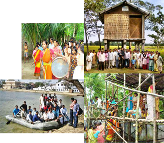
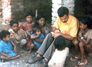
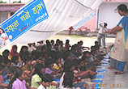
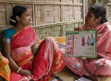
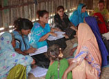
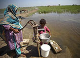
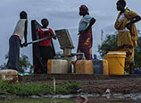

Our Initiatives
Making women and children our priority
Tens of millions of people are affected annually in India by floods, of which women and children are the worst hit. Making them as our priority, UNICEF works with Government to prepare at-risk communities take effective measures to minimise damage and be prepared against disasters.
Community-based Disaster Risk Reduction
The Community-based Disaster Risk Reduction (CBDRR) programme ensures that the poorest, most vulnerable and marginalised communities understand the simple yet lifesaving actions required to protect lives assets and lifeline services in case of natural disasters.
These measures include:
Education for children
Re-establishing education after an emergency not only meets a fundamental right of children, but also normalises the environment for them. UNICEF sets up Alternative Learning Spaces for children during floods with special emphasis on life saving skills, health and nutrition.
Special Care for pregnant mothers
Maternity huts are set up to ensure that pregnant mothers get optimum level of obstetric care services all the time (no disruption during and post disaster situation)
Special focus is also placed on integrated nutrition, immunization and health services regularly to expecting and lactating mothers and under 5 Children.
Ensure survival of at-risk communities for at least the first seven days of a disaster without external support. Use local action and local resources like family survival kits, panchayat plans, funds and schemes etc.
Training on life saving measures like swimming, boat making, machan making, creating raised platforms and shelters for people
Disaster proofing essential services such as water and sanitation with raised latrines and hand pumps
Raising awareness around hazards and risks
Hazard monitoring, early warning and dissemination system
Moving animal and assets to safer locations
Skill development on search & rescue, first aid, shelter management and more
Educating children on life saving skills


When 13 year old Rinky of flood-ravaged Supaul district in Bihar told bluntly to his father that he shouldn't be eating food without washing his hands properly, he couldn’t believe his ears.
Rinky is a student of the Naya Jeevan Abhiyan- a life saving skills programme initiated by Bihar Government and supported by UNICEF. Rinky was initially inattentive and rarely participated in activities during the first two days. But she suddenly broke out of her shell when the school made the students play games like ‘knotting and un-knotting a rope’ to emphasise problem solving skills. Rinky began to actively participate in other games as well and she became more confident. In fact, she became the lead-singer in her group for the rest of the training period.
The programme runs for four days and includes discussions on day-to-day activities, the level of knowledge about hygiene, keeping books and personal belongings properly, positive thinking and more.
For Rinky and 28 girls like her attending the ‘Life Skills Training’ sessions, life has more to offer than staring blankly at the chaos around them. They look forward to a new tomorrow.
Rinky is a student of the Naya Jeevan Abhiyan- a life saving skills programme initiated by Bihar Government and supported by UNICEF. Rinky was initially inattentive and rarely participated in activities during the first two days. But she suddenly broke out of her shell when the school made the students play games like ‘knotting and un-knotting a rope’ to emphasise problem solving skills. Rinky began to actively participate in other games as well and she became more confident. In fact, she became the lead-singer in her group for the rest of the training period.
The programme runs for four days and includes discussions on day-to-day activities, the level of knowledge about hygiene, keeping books and personal belongings properly, positive thinking and more.
For Rinky and 28 girls like her attending the ‘Life Skills Training’ sessions, life has more to offer than staring blankly at the chaos around them. They look forward to a new tomorrow.
Educating children on life saving skills1
When 13 year old Rinky of flood-ravaged Supaul district in Bihar told bluntly to her father that he shouldn't be eating food without washing his hands properly, he couldn't believe his ears.
Rinky is a student of the Naya Jeevan Abhiyan- a life saving skills programme initiated by Bihar Government and supported by UNICEF.
Rinky was initially inattentive and rarely participated in activities during the first two days. But she suddenly broke out of her shell when the school made the students play games like, knotting and un-knotting a rope, to emphasise problem solving skills. Rinky began to actively participate in other games as well and she became more confident. In fact, she became the lead-singer in her group for the rest of the training period.
The programme runs for four days and includes discussions on day-to-day activities, the level of knowledge about hygiene, keeping books and personal belongings properly, positive thinking and more.
For Rinky and 28 girls like her attending the, Life Skills Training, sessions, life has more to offer than staring blankly at the chaos around them. They look forward to a new tomorrow.
Rinky is a student of the Naya Jeevan Abhiyan- a life saving skills programme initiated by Bihar Government and supported by UNICEF.
Rinky was initially inattentive and rarely participated in activities during the first two days. But she suddenly broke out of her shell when the school made the students play games like, knotting and un-knotting a rope, to emphasise problem solving skills. Rinky began to actively participate in other games as well and she became more confident. In fact, she became the lead-singer in her group for the rest of the training period.
The programme runs for four days and includes discussions on day-to-day activities, the level of knowledge about hygiene, keeping books and personal belongings properly, positive thinking and more.
For Rinky and 28 girls like her attending the, Life Skills Training, sessions, life has more to offer than staring blankly at the chaos around them. They look forward to a new tomorrow.
Ensuring safe deliveries in turbulent times


In a unique initiative to ensure that pregnant women have access to proper medical care during floods; UNICEF and the Government of Bihar had set up maternity huts to provide medical care to expecting mothers.
Sita Devi became the first woman at the Bargamaghachi camp to give birth at the newly established maternity hut. This camp was home to over 600 families from six neighbouring villages.
The maternity hut also catered to the needs of 76 other pregnant women who received ante-natal care, including counselling, TT vaccinations, and Iron Folic tablets.
In collaboration with the Department of Health, the maternity hut had four Auxiliary Nurse Midwives (ANMs), four paramedics and three doctors on rotation. Electricity was provided by an onsite generator and the maternity hut had all the basic amenities, equipment and furniture.
The maternity hut also had an out-patient department where the health workers provide medication for everything from diarrhoea to skin infections, which are the most common. More than 1161 patients were treated at this particular camp alone.
UNICEF ensured that all these services are available – because being able to deliver in a hygienic environment, and attended by a skilled birth attendant could mean the difference between life and death for both the mother and the child.
In addition to this, Mobile Health Teams were also sent who vaccinated children against polio and measles, and attending to other medical emergencies.
Sita Devi became the first woman at the Bargamaghachi camp to give birth at the newly established maternity hut. This camp was home to over 600 families from six neighbouring villages.
The maternity hut also catered to the needs of 76 other pregnant women who received ante-natal care, including counselling, TT vaccinations, and Iron Folic tablets.
In collaboration with the Department of Health, the maternity hut had four Auxiliary Nurse Midwives (ANMs), four paramedics and three doctors on rotation. Electricity was provided by an onsite generator and the maternity hut had all the basic amenities, equipment and furniture.
The maternity hut also had an out-patient department where the health workers provide medication for everything from diarrhoea to skin infections, which are the most common. More than 1161 patients were treated at this particular camp alone.
UNICEF ensured that all these services are available – because being able to deliver in a hygienic environment, and attended by a skilled birth attendant could mean the difference between life and death for both the mother and the child.
In addition to this, Mobile Health Teams were also sent who vaccinated children against polio and measles, and attending to other medical emergencies.
Teaching the importance of safe drinking water and sanitation


Rajkumaridevi Mandal Kumar Chopal is a resident of one of the most flood prone villages in Darbhanga district of Bihar.
The floods of 2007 had taken away everything she had. Despite the loss and suffering, RajKumari didn’t lose hope and became an active member of SURAKSHIT HUM (We Are Safe) programme supported by UNICEF.
The initiative is responsible for leading flood preparedness work in their village and RajKumari is a proud member of its water, sanitation and hygiene task force.
She supervises work like construction of raised flood shelters, raising existing hand pumps above flood level and construction of flood protected toilets. She also conducts regular meetings with women and children on cleanliness and hand washing that can keep many diseases at bay.
“Earlier I thought that floods were integral to our lives and nothing could be done about them. The training we received as part of the SURAKSHIT HUM programme has made me believe we can certainly reduce the suffering, even if we cannot stop flooding.” says Rajkumari, in a determined voice.
The floods of 2007 had taken away everything she had. Despite the loss and suffering, RajKumari didn’t lose hope and became an active member of SURAKSHIT HUM (We Are Safe) programme supported by UNICEF.
The initiative is responsible for leading flood preparedness work in their village and RajKumari is a proud member of its water, sanitation and hygiene task force.
She supervises work like construction of raised flood shelters, raising existing hand pumps above flood level and construction of flood protected toilets. She also conducts regular meetings with women and children on cleanliness and hand washing that can keep many diseases at bay.
“Earlier I thought that floods were integral to our lives and nothing could be done about them. The training we received as part of the SURAKSHIT HUM programme has made me believe we can certainly reduce the suffering, even if we cannot stop flooding.” says Rajkumari, in a determined voice.